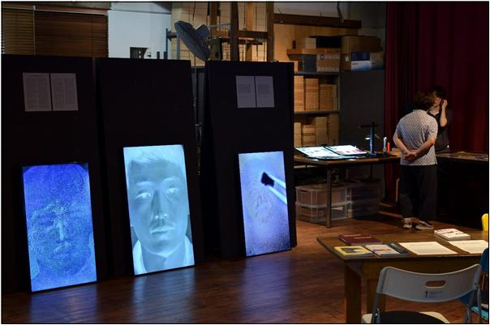

Retouching: Drawing for Erasure
.jpg)
.jpg)
.jpg)
작품 정보
서로 다른 LED 모니터 3대에서 각각의 영상을 재생하는 3채널 영상 설치 작업. 영상 스틸과 설치 전경을 구분해 기록한다.
작업 의도 원문은 추후 추가 예정입니다. 위 문장은 확인된 설치 방식에 관한 설명입니다.



서로 다른 LED 모니터 3대에서 각각의 영상을 재생하는 3채널 영상 설치 작업. 영상 스틸과 설치 전경을 구분해 기록한다.
작업 의도 원문은 추후 추가 예정입니다. 위 문장은 확인된 설치 방식에 관한 설명입니다.


종이에 잉크를 얹는 반복적인 붓질을 뜨개질에 비유한다. 시안과 마젠타가 겹치며 새로운 색을 만들고, 자유롭게 놓인 점들은 작가의 의도를 넘어 스스로 질서를 형성한다.
회화와 조각을 사진으로 경험하는 문제에서 출발한다. 기록 이미지의 선택성과 추상성을 살피며 낡은 매체와 새로운 매체 사이에서 역사적 내러티브의 틈을 드러낸다.
Watch on Vimeo ↗공기를 매개로 전달되는 목소리가 시간과 공간을 지나 타인의 귀에 도달하는 과정을 다룬다. 목소리의 전달과 청취 사이에 존재하는 거리와 변화를 사유한다.
영화 〈황홀〉(1974)과 김승옥의 소설 〈무진기행〉을 참조해 순천의 실제 장소와 소설의 허구를 교차한다. 영화 촬영지와 영화 장면을 사진도상적 이미지의 합성으로 재구성한다.
장치에 의해 매개되는 준지각적 상황과 관객의 지각 사이를 탐구한다. 광경화 레진으로 형상화된 소금창고가 빛과 그림자로 거듭 매체화되는 과정을 다룬다.
Watch on Vimeo ↗가족사진과 오래된 사진관 사진, OHP 필름, 축광 스크린을 결합한다. 빛을 흡수하고 다시 방출하는 물질의 전이 과정을 기억과 이미지의 생성·소멸에 대응시킨다.
Watch on Vimeo ↗측면과 정면의 얼굴 이미지, 신체의 분류와 수량화에서 출발한다. 사진에 의해 분할되는 시간과 신체 운동을 통해 측정과 지각의 관계를 탐색한다.
포트폴리오에 작품 이미지와 매체가 수록되어 있으며 별도의 작업 의도 설명은 확인되지 않는다.
포트폴리오에 작품 이미지와 매체가 수록되어 있으며 별도의 작업 의도 설명은 확인되지 않는다.
일본 치쿠고의 녹나무 숲에서 수집한 낙엽의 잎맥을 처리해 수제 필름에 코팅한다. 카메라 없이 만든 필름을 퍼포레이션 구동 장치로 투영해 원시영화의 광학적 환경과 물질의 그림자를 드러낸다.
Watch on Vimeo ↗버려진 물질을 채집해 카메라 없이 필름을 만들고 투영한다. 수작업의 원시영화 장치와 3D 프린팅 등 디지털 기술을 한 공간에 중첩시킨다.
영화의 물질적 구성을 통해 무엇인가를 알아채는 측정의 구조를 이해하려 한다. 〈블레이드 러너〉의 한 장면을 참조해 비가시적인 영감과 시각적 인식의 관계를 살핀다.
Watch on Vimeo ↗서사 이전의 영화가 지닌 빛의 운동에 주목한다. 포커싱, 플리커, 회전, 반사, 투영, 그림자 등 스크린 이면에 감춰진 영화의 광학적 요소를 공간에 드러낸다.
Watch on Vimeo ↗순천만에서 본 창고를 잘못 알아본 경험을 바탕으로 기억과 실제 풍경 사이의 불일치를 탐색한다. 촬영과 사진 쌓기를 통해 시선의 궤적과 시간의 물질적 두께를 형성한다.
Watch on Vimeo ↗열차의 속도가 풍경의 시각적 경험을 변화시키는 현상에서 출발한다. 이동 중 채집한 자연과 도시 풍경을 디지털 매체로 재편해 기계적 신체가 생성한 풍경화를 제시한다.
자동회전 카메라로 부산과 교토 사이의 풍경을 360도 또는 720도 촬영한다. 서로 다른 시간의 풍경을 병렬 배치해 광학적 지각과 영화적 시각 경험의 관계를 탐색한다.
Watch on Vimeo ↗영화적 장치, 프레임, 매체의 지각 조건과 측정의 문제를 중심으로 작업과 이론 연구를 병행한다.
변재규(Byun Jaekyu, 1975)는 영상 설치, 영화, 사진, 회화 등의 매체를 통해 영화적 장치와 지각의 메커니즘을 탐구하는 아티스트이다. 풍경의 파노라마적 재해석에서 출발해 이미지의 기록·재생·투영을 구성하는 장치에 주목해 왔다.
최근에는 회화를 시각적 구조물을 만드는 과정으로 접근하며, 작품 제작과 병행해 관련 이론 연구 및 리서치를 수행한다.
작가 소개는 업로드된 CV의 서술을 바탕으로 홈페이지용으로 편집했습니다.
국립현대미술관 · 국립아시아문화전당 · 부산현대미술관
주요 이력 발췌. 전체 CV는 추후 별도 페이지로 확장할 수 있습니다.
이메일과 전화번호는 공개 여부 확인 전까지 표시하지 않습니다.